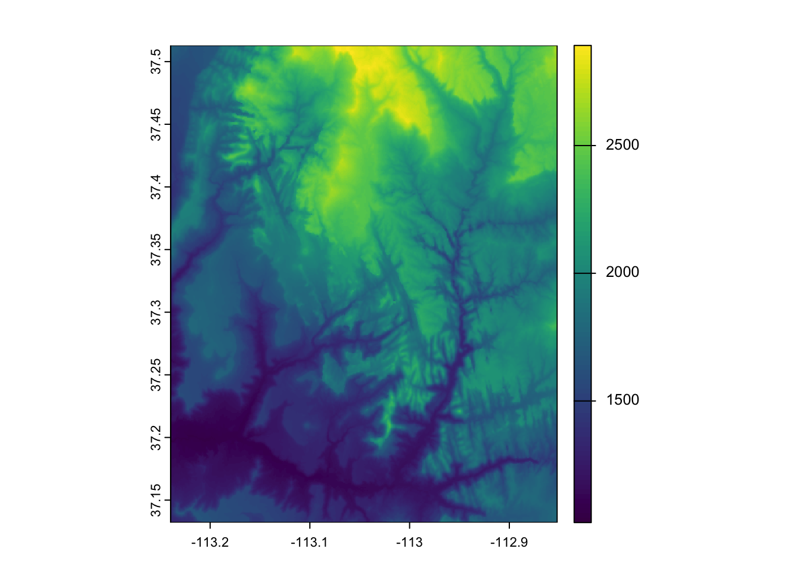
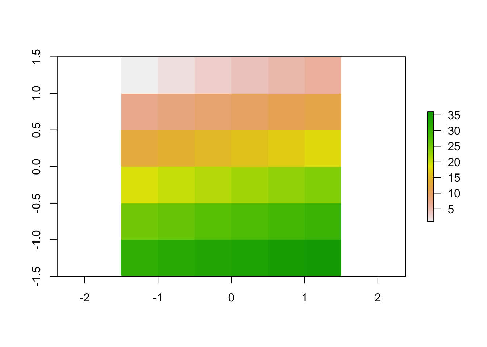
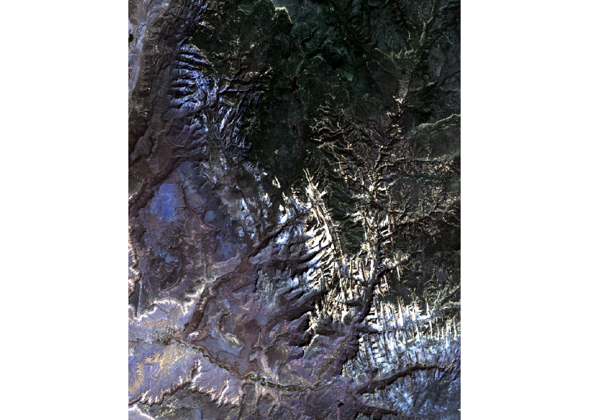
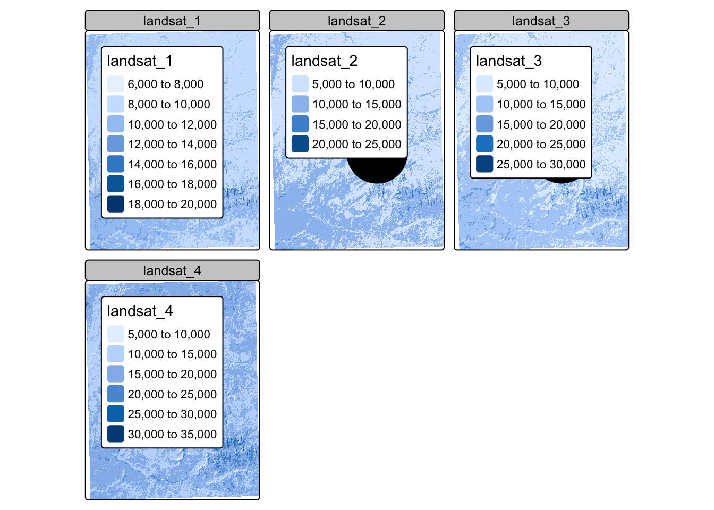

library(raster)
library(sf)
library(terra)
library(tidyverse)
library(tmap)
theme_set(theme_bw())Raster Data
Storing spatially gridded information in rasters.
The raster data format is used to store spatial data that lie along regular grids. The values along the grid are stored as entries in the matrix. The raster object contains metadata that associates each entry in the matrix with a geographic coordinate.
Since the data they must lie along a regular grid, rasters are most often used for continuously measured data, like elevation, temperature, population density, or landcover class.
We can create a raster using the
rastcommand. The code block below loads an elevation map measured by the space shuttle.::: {.cell}
f <- system.file("raster/srtm.tif", package = "spDataLarge") zion <- rast(f):::
Typing the name of the object shows the metadata associated with it (but not the actual grid values). We can see that the grid has 457 rows and 465 columns. We also see its spatial extent: The minimum and maximum longitude are both close to -113 and the latitudes are between 37.1 and 37.5. A quick google map search shows that this is located in Zion national park.
::: {.cell}
zion::: {.cell-output .cell-output-stdout}
class : SpatRaster size : 457, 465, 1 (nrow, ncol, nlyr) resolution : 0.0008333333, 0.0008333333 (x, y) extent : -113.2396, -112.8521, 37.13208, 37.51292 (xmin, xmax, ymin, ymax) coord. ref. : lon/lat WGS 84 (EPSG:4326) source : srtm.tif name : srtm min value : 1024 max value : 2892::: :::
::: {.cell}
plot(zion)::: {.cell-output-display}  ::: :::
In contrast, the
rastercommand lets us create raster objects from scratch. For example, the code below makes a raster with increasing values in a 6 x 6 grid. Notice that we had to give a fake spatial extent.::: {.cell}
test <- raster( nrows = 6, ncols = 6, res = 0.5, xmn = -1.5, xmx = 1.5, ymn = -1.5, ymx = 1.5, vals = 1:36 ) plot(test)::: {.cell-output-display}  ::: :::
Real-world rasters typically have more than one layer of data. For example, you might measure both elevation and slope along the same spatial grid, which would lead to a 2 layer raster. Or, for satellite images, you might measure light at multiple wavelengths (usual RGB, plus infrared or thermal for example).
Multi-layer raster data can be read in using
rast. You can refer to particular layers in a multi-layer raster by indexing.::: {.cell}
f <- system.file("raster/landsat.tif", package = "spDataLarge") satellite <- rast(f) satellite # all 4 channels::: {.cell-output .cell-output-stdout}
class : SpatRaster size : 1428, 1128, 4 (nrow, ncol, nlyr) resolution : 30, 30 (x, y) extent : 301905, 335745, 4111245, 4154085 (xmin, xmax, ymin, ymax) coord. ref. : WGS 84 / UTM zone 12N (EPSG:32612) source : landsat.tif names : landsat_1, landsat_2, landsat_3, landsat_4 min values : 7550, 6404, 5678, 5252 max values : 19071, 22051, 25780, 31961:::
satellite[[1:2]] # only first two channels::: {.cell-output .cell-output-stdout}
class : SpatRaster size : 1428, 1128, 2 (nrow, ncol, nlyr) resolution : 30, 30 (x, y) extent : 301905, 335745, 4111245, 4154085 (xmin, xmax, ymin, ymax) coord. ref. : WGS 84 / UTM zone 12N (EPSG:32612) source : landsat.tif names : landsat_1, landsat_2 min values : 7550, 6404 max values : 19071, 22051::: :::
Base R’s
plotfunction supports plotting one layer of a raster at a time. To plot more than one layer in a multichannel image (like ordinary RGB images) you can use theplotRGBfunction.::: {.cell}
plotRGB(satellite, stretch = "lin")::: {.cell-output-display}  ::: :::
Sometimes, it’s useful to overlay several visual marks on top of a raster image.
::: {.cell}
satellite <- project(satellite, "EPSG:4326") point <- data.frame(geom = st_sfc(st_point(c(-113, 37.3)))) %>% st_as_sf() tm_shape(satellite) + tm_raster() + tm_shape(point) + tm_dots(col = "blue", size = 5)::: {.cell-output-display}  ::: :::
If we want to visualize just a single layer, we can use
tm_rgbwith all color channels set to the layer of interest. Note that, here, I’ve rescaled the maximum value of each pixel to 255, since this is the default maximum value for a color image.tm_shape(satellite / max(satellite) * 255) + tm_rgb(r = 1, g = 1, b = 1)